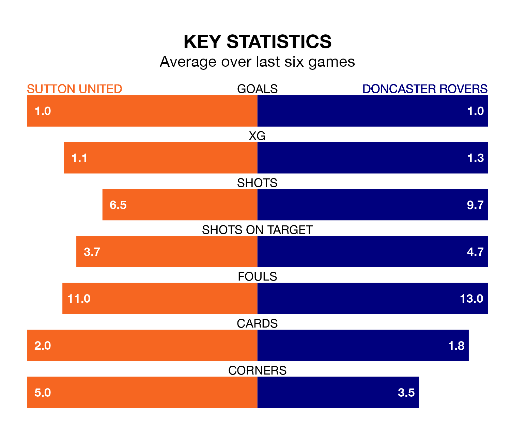

Saturday's match at the VBS Community Stadium sees two relegation candidates play each other, as 23rd-ranked Sutton United host 22nd-placed Doncaster Rovers.
Sutton have picked up 21 points from their first 21 EFL League Two games, with four wins and nine draws.
That is seven points less than the Rovers have collected, having won eight and drawn four.
Sutton are in bad form in EFL League Two, with no wins and four draws from their last six games.
With a win and a draw over that period, Doncaster's form is similar – they have both taken four points from 18.
In the last three years, Sutton and Doncaster have played each other on three occasions. Sutton won one of them and Doncaster the other.
Their last meeting was on October 14, when Doncaster won 4-1 at home.
With 33 goals in 29 games so far this season, United are scoring at below the league average rate with 1.1 goals per game. And they are conceding more than average, letting in 58 goals at a rate of 2.0 per game.
Rovers are also below average scorers, with 1.1 goals per game, compared to a league average of 1.5. They have conceded 1.9 goals per game.
Sutton's last match was on Tuesday, a 2-1 loss against Harrogate Town, with Ryan Jackson getting the goal for the Us.
Doncaster lost 5-1 against Stockport County last time out, on January 27, with Harrison Biggins on the scoresheet.
Saturday's match will be refereed by Scott Simpson, who has taken charge of nine EFL League Two games so far this season, issuing four red cards and booking 49 players. He has awarded six penalties.
The last Sutton game Simpson refereed was a 1-0 home loss to Forest Green Rovers on September 2. He is yet to oversee a match featuring Doncaster this season.
Updated: 10:40 (UTC), 01/02/24